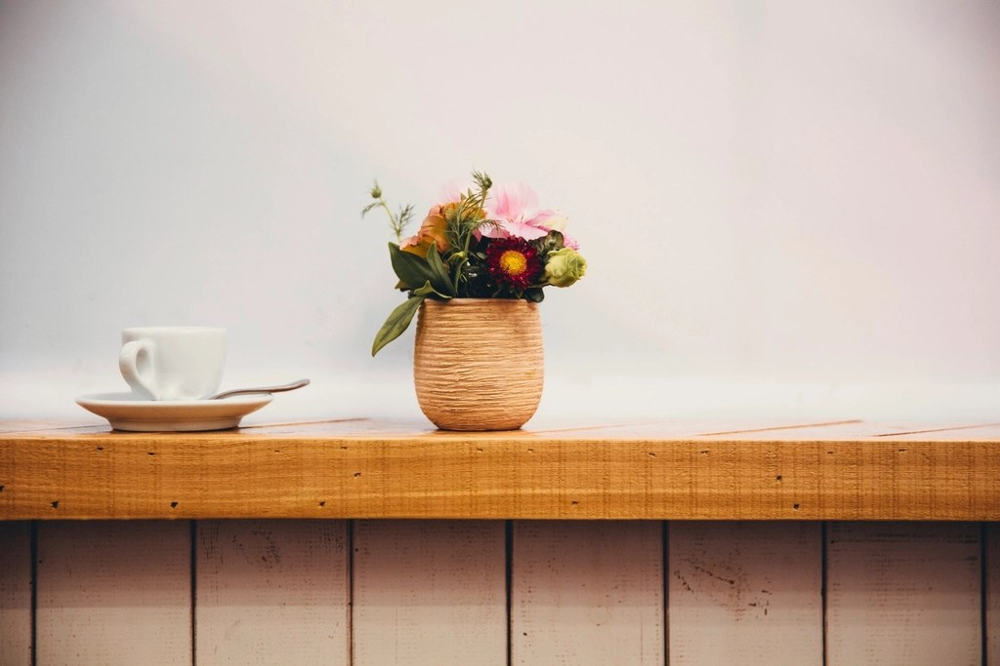

仕事の合間に、静かな店内でゆっくりコーヒーをいただくのが楽しみです。山に囲まれた立地だからこそ、気持ちが落ち着く一杯になります。
地元の常連客(60代男性)
緑に囲まれた一軒家のような佇まいで、車を停めてほっと一息つける場所でした。丁寧に淹れていただいた一杯に、旅の疲れが和らいだ気がします。
熊本市内からドライブで来店(30代女性)
好みの豆を選ぶのが楽しみで、時々立ち寄っています。相談しながら選べるのがありがたく、家でも店の雰囲気を思い出しながら飲んでいます。
豆を目当てに訪れる常連客(40代男性)